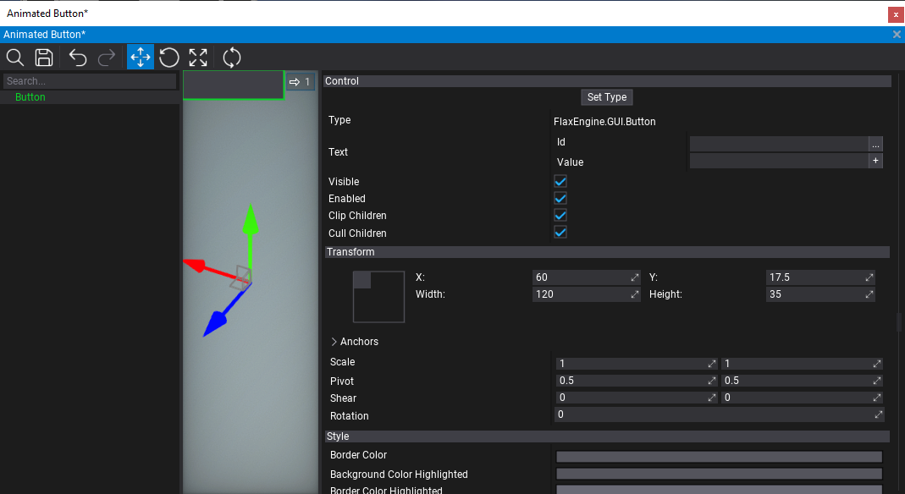
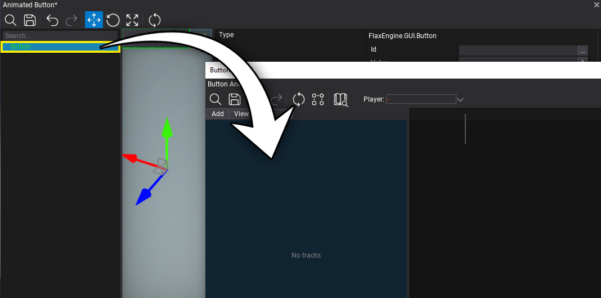
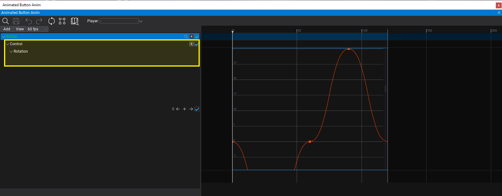
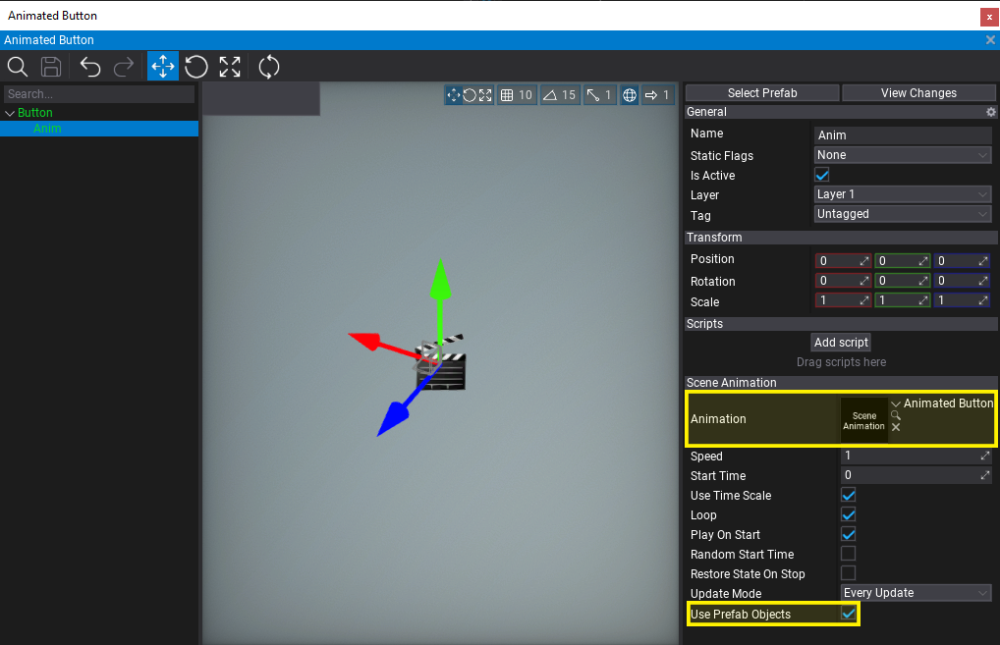
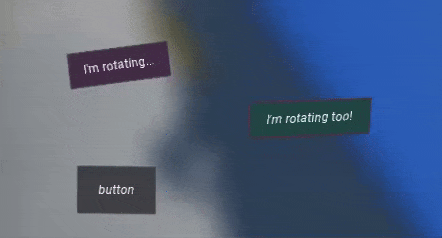

HOWTO: Creating UI animation in prefab
In this tutorial, you will learn how to create an animation for a user interface that can be reused in prefab. This can be applied to other game objects (eg. doors, traps) which can be reused as prefab and need to contain animation.
1. Create prefab
Create UI and convert it into a prefab or set up a prefab from a scratch. In this tutorial, a single button UIControl will be enough.

2. Create animation
Right-click in Content window to add new Scene Animation asset. Name it and open it to edit.

3. Add track with prefab actor
Now drag and drop the actor from the prefab editor window into the scene animation tracks panel. It will add a new track with that object animation. Track label will be green to indicate that it's prefab.

4. Animate UI properties
Now, add new sub-tracks with properties animation. For UI control such as Button add sub-track Control first and then animate the control properties.

5. Add Scene Animation Player
Now, add a new Scene Animation Player to that prefab (eg. as a child to the animated button), link the created animation asset and check the Use Prefab Objects property to ensure that player will automatically use prefab instance objects for the animation.

6. Test it out!
Finally, spawn this prefab into the level (once or multiple times), hit the Play button (or F5 key), and test the animation playback.
